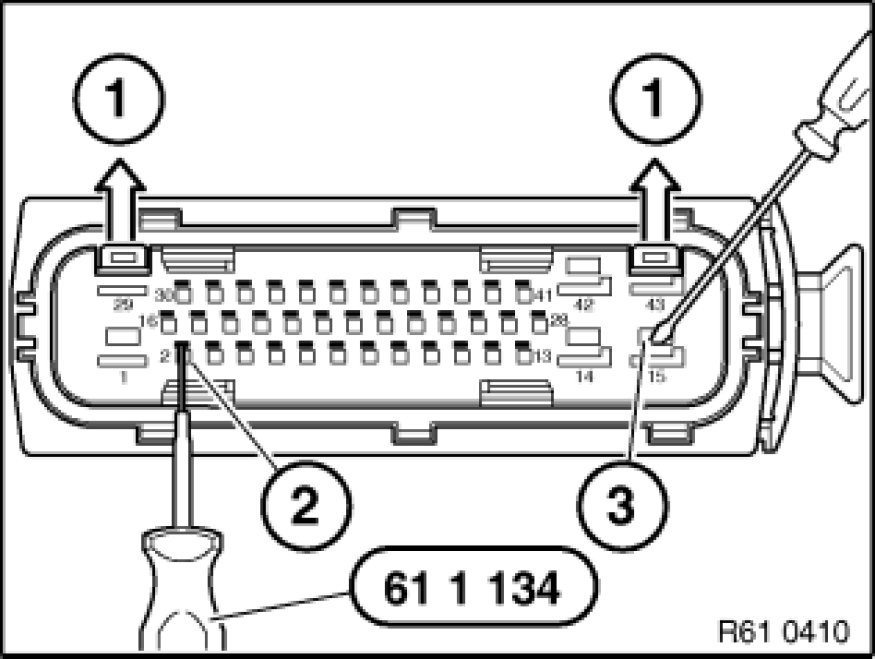
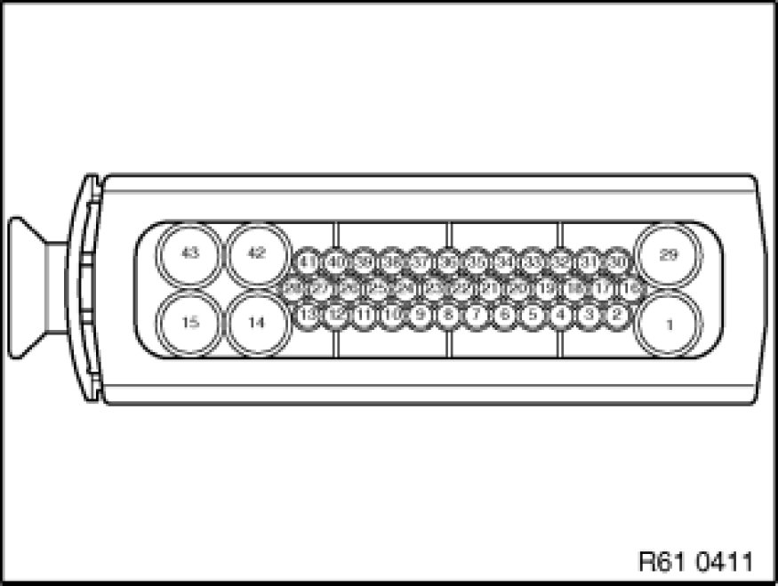

Socket Housing 42-, 43-pin, Hybrid System MQS/MPQ
61 13 ... - Socket housing 42-, 43-pin, Hybrid System MQS / MPQ

Manufactured by AMP: The following contact types without strand sealing can be fitted in the socket housings:
- MQS (Micro Quadlock System)
- MPQ, width 2.8 mm (Micro Power Quadlock)
- MPQ, width 5.2 mm (Micro Power Quadlock)

Open secondary locks (1) on socket housing.
Press back retaining hook of MQS contacts (2) with special tool 61 1 134 and pull out cable with contact.
Press back retaining hook of MPQ contacts (3) with screwdriver or similar tool and pull out cable with contact.

Installation:
Bend open retaining hook of contacts gently before inserting into plug housing.
To install contacts, observe cavity numbers on reverse side of socket housing.